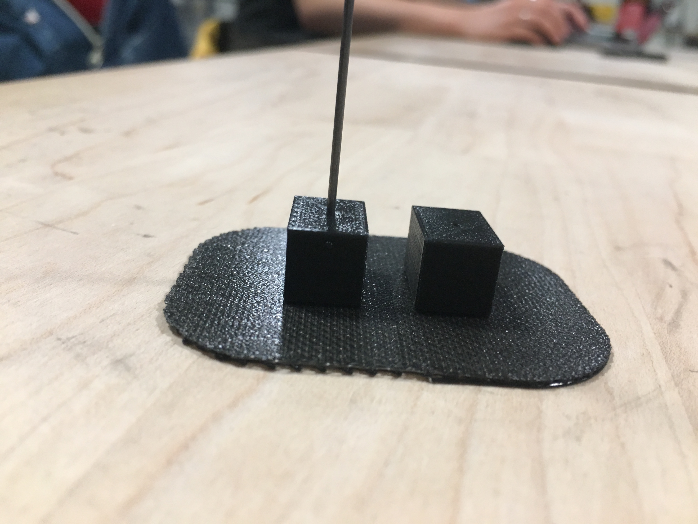

Final Project
For my final project I designed an Automaton
INSPIRATION & GOAL
I was inspired by a rustic example of an Automaton of a pig with wings. My goal is to adapt
the same principles to create an Automaton featuring dragonfly wings that appear to flap by
the turn of a crank.
RESEARCH & SKETCHING A PLAN
With no engineering in my background this required me to analyse the simple mechanics
required to cause an upward/downward motion. I would also have to create housing for the mechanism,
and the 'thing' to be moved. I worked out solutions by sketching, and looking up the mechanics of motion
online.

MOTION
• I first attempted to draw a mechanism that had 3 parts, a round "container" to hold the steel
rod in place that did not rotate, with a offset cam/cog inserted inside attached to a shaft
which rotated when cranked.
• I shifted to a more simple solution shown in the above sketch: basically a "bobber" connected to
the rod, rests on top of an offset cam which is fixed to a shaft and turned by a crank.
DESIGN
After studying dragonfly visuals, I decided I did not want a realistic representation and made a
design that reduced the main body to a cube, making the wings and motion the main focus.
'MAKING'
GOALS
3D print the body cube and the bobber that will be fitted to the base of the steel rod.
• I aquired a steel rod roughly 1.18mm thick (sourced from Hobby Town)
• BOBBER: In Rhino I make the bobber by creating a circle 10mm in diamter that I extrude and cap. This
seems a good size to rest on a 3mm thick CAM. I create a hole in the middle using a solid cylinder
(diameter 1.22) and boolean difference command—this is where the rod will fit in place on the bobber.
With 3D printing I discover the hole isn't large enough, which informs the diameter for the shaft
when I make the body-cube in Rhino.
• In Rhino I turn a mesh cube into a solid cube by extruding and capping a rectangle. Then create
a solid cylinder with dimaeter of 1.30, where the rod will be inserted. Again, with printing the hole
closes in and is not large enough. I end up drilling the opening in both bobber and body a bit wider, the
result is a loose fit which I think I can make work.

You can see how little the 3D printed cylinder shaped bobber is, in the above photo. I didn't think the
"bobber" that rests on the CAM had to be much bigger than the width of the CAM(3mm).
I was wrong—I needed a larger flat bobber that would smootlhy rise and fall without falling off the CAM.
But this original bobber became my solution along with an extra body bead, for maintaining a perfectly verticle
shaft motion.
I 3D printed 3 versions of the body bead, this rhino file shows the last, with tiny shaft-openings on the sides where I intend
to insert andn glue small metal earring pin with a loop on the end, as a evolving idea for how to attach wings in the end.
This time the shaft (verticle) opening at center for the steel rod is 1.40—--and is the right fit for the steel rod, without needing —
to drill—but the other horizontal "shafts" totally filled in, no possibility of inserting the earring pin.—

You can see in the above image that I make a two layer BOBBER from wood with a 1.17mm hole at the center of one,
which is deliberate for holding the base of the 1.18mm mm rod in place. It worked, but I needed the 3D bobber
help keep the steel rod from wavering back and forth when pushed upward/downward.
Also note that I use/glue one of the extra 3D printed body cube to act as a "guide" to keep
the steel rod in alignment verticle. Note: it was important that neither support created friction interrupting
the upn and down flow of the steel rod.
GOAL: LASER CUT FITTED BOX
From a standpoint of time efficiency, I create a box pattern with the help of a Online box-maker.
I tailor it to my needs and test the fit on a piece of scrap:
Size of box: 70mm x 100mm x 70mm
Kerf: .007
Rule: 001
RESULT: When I lasercut my nice hardwood board the fit was loose. A kerf issue.
The above and below visual is are evidence of my struggle to get the box to be a snugh fit together.
I ended up using a inferior wood material in the end because I wasn't successful when cutting the (pretty)
Alder hardwood. Sad!
The final box has a kerf of .002
GOAL: Lasercut Paper Wings.
• I use Adobe Illustrator and source a vector file for lace wings online. I adapt the vector file
of the wings to make it work for my goals, one big change was adding a solid area for fitting them
onto the rod in "spindle" fashion.
My first choice for material became this pretty gray luminescent birch veneer for the wings. I burn up a
lot of that veneer! The issue stemmed from two things: Lasercutter settings and the artwork being overly delicate.
• settings that worked were 25 speed, 50 power,30 frequency.
• Below is the Shutterstock source for my final wing art, that worked.

I was able to manipulate the stock art to become what I needed for attaching to the body-bead. I created
the one-piece version as a back-up plan for if I wasn't successful solving for making hinged/moveable wings.
I was ultimately delighted with how the wings turned out.
THE CAM and WASHERS. The CAM is 40mm in diameter. The center hole is a fracton bigger than the 3mm dowel, and was
perfectly tight—I did not need glue to hold the CAM firmly in the desired central place on the dowel. The washers
(cut at the same diameter as CAM) worked perfectly without needing glue.
CUT CRANK SHAFT: 30mm wood dowel from hobby store
ROD
A 1.8mm steel rod. I made a cut that was based on visual estimation.
Mechanism Assembled
One of the most challenging aspects of assembly was getting the wire supports for the wings in place. I used a
gripper tool to straighten a thin wire that came from a spool. I ran it underneath the cover and relied on the pressure fit
of the snap fit cover to hold them in place : this worked because of deliberately keeping the kerf for the cover a bit loose.
MY DRAGONFLY AUTOMATON
It was super satisfying when all these many pieces when assembled, worked together beautifully. The tolerances were
all good, the motion was smooth.
I adhere the wings with tiny magnets that sit over the steel rod going through the center of the body bead.
I hoped this solution would work because the magnets remind me of the oversized eyes of the dragonfly.
I did not need to use the below bead made from sculpey—because the magnet /paper hinge solution for attaching my
wings worked. However, another solution could be attaching the wings like earrings to the body of dragonfly.